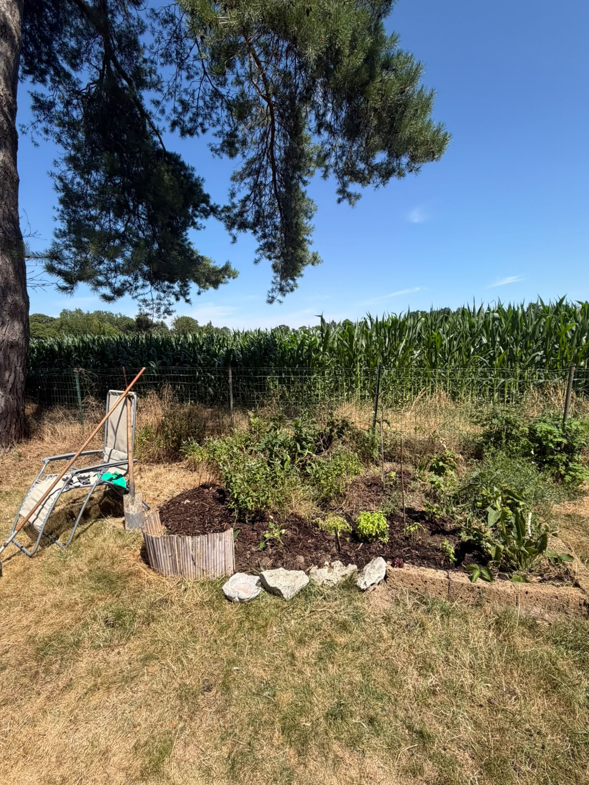
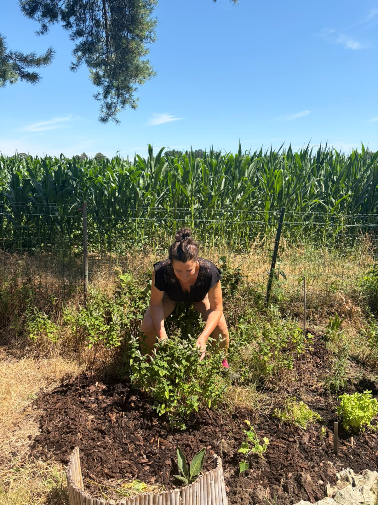

Savoir ce qu'on mange
Pas de pesticides, pas de mystère : du semis à l'assiette, on connaît le chemin de chaque légume. C'est la plus courte des circuits courts.
Bienvenue dans
Le jardin de Maman, cultivé avec patience, tendresse et beaucoup d'amour.


Derrière la maison, entre le grand pin et le champ de maïs, il y a un petit coin de terre pas comme les autres. C'est là que Maman passe ses matinées du week-end, les mains dans la terre et le sourire aux lèvres. Elle y fait pousser ses herbes, ses légumes et ses petites merveilles — sans produits chimiques, juste avec de l'eau, du soleil et une bonne dose de patience.
Chaque plante a son histoire, chaque récolte a son goût. Ce site est une petite balade dans son jardin : pourquoi elle le cultive, ce qu'il lui apporte, et tous ses secrets de jardinière pour que vous aussi, vous puissiez faire pousser votre petit coin d'herbes.
À l'heure des supermarchés et des légumes qui traversent la planète, faire pousser soi-même ce que l'on mange n'a jamais eu autant de sens.
Pas de pesticides, pas de mystère : du semis à l'assiette, on connaît le chemin de chaque légume. C'est la plus courte des circuits courts.
Jardiner, c'est bouger en douceur, respirer dehors et laisser filer le stress. La terre est une merveilleuse thérapeute.
Zéro kilomètre parcouru, zéro emballage, et un refuge pour les abeilles, papillons et vers de terre du quartier.
Un jardin, ça se raconte et ça s'offre : un bouquet de persil par-ci, une courgette par-là, et des souvenirs pour toute la famille.
Cinq habitantes du petit coin d'herbes, leurs bienfaits pour la santé, et les conseils de Maman pour bien les faire pousser. Cliquez sur une plante pour découvrir ses secrets ! 👇
Mentha — la fraîcheur incarnée
Reine des tisanes, la menthe facilite la digestion et apaise les ballonnements. Riche en antioxydants, elle aide aussi à soulager les maux de tête et rafraîchit l'haleine. Quelques feuilles dans une carafe d'eau, et l'été a déjà meilleur goût.
Ocimum basilicum — le parfum de l'été
Anti-inflammatoire naturel, le basilic regorge d'antioxydants et de vitamine K. Il aide à la digestion et parfume les plats si bien qu'on sale moins — un petit coup de pouce pour le cœur. Et une tomate-basilic du jardin, c'est le bonheur tout simple.
Cucurbita pepo — la généreuse
Gorgée d'eau et très peu calorique, la courgette est douce pour la digestion et riche en potassium, en vitamine C et en fibres. Elle se cuisine de mille façons — et ses fleurs aussi se mangent, en beignets ou farcies !
Arctium lappa — le secret bien gardé
La mal-aimée des fossés est en réalité une merveille : sa racine, dépurative, est réputée depuis des siècles pour embellir la peau et soutenir le foie. Riche en inuline, elle nourrit aussi les bonnes bactéries de l'intestin. Au Japon, on la cuisine sous le nom de gobo.
Petroselinum crispum — le fidèle compagnon
Ne le prenez pas pour une simple décoration : le persil est un concentré de vitamines C et K, de fer et d'antioxydants. Une poignée hachée sur le plat, et voilà un vrai petit geste santé — qui rafraîchit l'haleine en prime.
Une question sur vos semis ? Une menthe qui fait grise mine ? Maman adore parler jardin et se fera une joie de vous donner ses astuces. N'hésitez pas à lui écrire !
••••••••••••@•••••••
Elle répond entre deux arrosages 😉Bientôt disponible !
Encore en train de germer… 🌱« Un jardin, même tout petit, c'est un morceau de bonheur qu'on fait pousser soi-même. »
— Maman 🌷